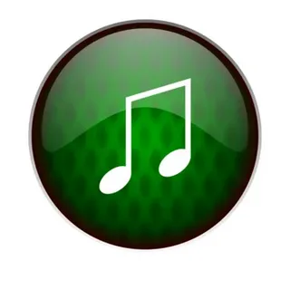

📼 Мои записи
🥁 Перейти на барабан
◀
▶
🎹 Пианино с записью
🎵 выбрать звучание:
🎹 №1 sound
🎹 №2 sound
🎹 №3 sound
🎹 №4 sound
🎹 №5 sound
🎹 №6 sound
🎹 №7 sound
🎹 №8 sound
🎹 №9 sound
🎹 №10 sound
⚪ Запись выкл
⏺
▶
Ё
— запись |
1
— воспр.